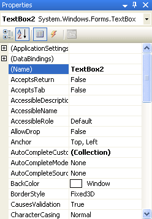
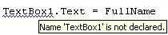
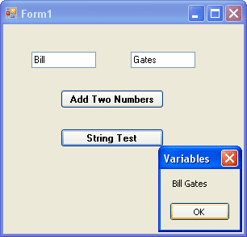
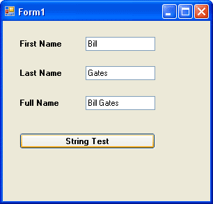

Assigning Textbox text to your Variables
Instead putting direct text into your variables, such as "Bill" or "Gates", you can get text from a textbox and put that straight into your variables. We'll see how that's done now. First, do this:
- Add a new textbox to your form
- With the textbox selected, locate the Name property in the Properties area:

The current value of the Name property is Textbox2. This is not terribly descriptive. Delete this name and enter txtLastName. Scroll down and locate the Text property. Delete the default text, and just leave it blank.
Click on your first textbox to select it. Change the Name property from Textbox1 to txtFirstName.
What we've done is to give the two textboxes more descriptive names. This will help us to remember what is meant to go in them.
Unfortunately, if you view your code (click the Form1.vb tab at the top, or press F7 on your keyboard), you'll see that the blue wiggly lines have returned:
If you hold your cursor of the Textbox1, you'll see this:

It's displaying this message because you changed the name of your Textbox1. You now no longer have a textbox with this name. In the code above, change Textbox1 into txtFirstName and the wiggly lines will go away. (Change it in your Button1 code as well.) Your code should now read:
txtFirstName.Text = FullName
Run your programme again. If you see any error messages, stop the programme and look for the wiggly lines in your code.
We'll now change our code slightly, and make use of the second textbox. You'll see how to get at the text that a user enters.
Locate these two lines of code
FirstName = "Bill"
LastName = "Gates"
Change them to this
FirstName = txtFirstName.Text
LastName = txtLastName.Text
Remember: the equals ( = ) sign assigns things: Whatever is on the right of the equals sign gets assigned to whatever is on the left. What we're doing now is assigning the text from the textboxes directly into the two variables.
Amend your code slightly so that the Whole Name is now displayed in a message box. Your code should now be this:
Dim FirstName As String
Dim LastName As String
Dim WholeName As String
FirstName = txtFirstName.Text
LastName = txtLastName.Text
WholeName = FirstName & " " & LastName
MsgBox(WholeName)
Run your programme. Enter "Bill" in the first textbox, and "Gates" in the second textbox. Then click your "String Test" button. You should get this:

Before we changed the code, we were putting a person's name straight in to the variable FirstName
FirstName = "Bill"
But what we really want to do is get a person's name directly from the textbox. This will make life a whole lot easier for us. After all, not everybody is called Bill Gates! In the line FirstName = txtFirstName.Text that is what we're doing - getting the name directly from the textbox. What we're saying to Visual Basic is this
- Look for a Textbox that has the Name txtFirstName
- Locate the Text property of the Textbox that has the Name txtFirstName
- Read whatever this Text property is
- Put this Text property into the variable FirstName
And that's all there is too reading values from a textbox - just access its Text property, and then pop it into a variable.
No more reading these lessons online - get the eBook here!
Exercise
- Add a third textbox to your form
- Change its Name property to txtWholeName
- Add labels to your form identifying each textbox (A quick way to add more labels is to use the toolbox to add one label. Then right click on that label. Choose Copy from the menu. Right click on the form, and select Paste.)
- Write code so that when the "String Test" button is clicked, the whole of the persons name is displayed in your new textbox
When you complete this exercise, your form should look like this one (we've deleted the first button and its code, but you don't have to):

In the next part, we'll explore some more variable types you can use